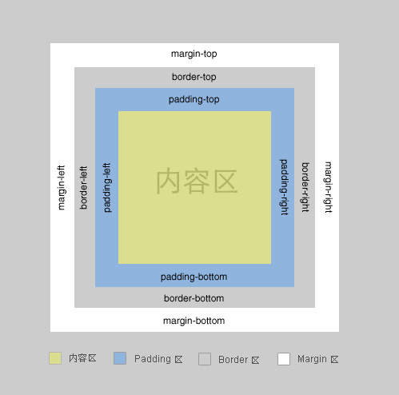

利用盒模型，css画出不规则图形
一个盒子包括：margin+border+padding+content。上下左右边框交界处出呈现平滑的斜线。利用这个特点，通过设置不同的上下左右边框宽度或者颜色可以得到小三角，小梯形等。 调整宽度大小可以调节三角形形状。

示例1：一般情况下，我们设置盒子的宽高度及上下左右边框，会呈现如下图：
.example{height: 20px; width: 20px; border-color: #FF9600 #3366ff #12ad2a #f0eb7a; border-style: solid; border-width: 20px;}
示例2在上面基础上，我们把宽高度都设为0时，会呈现上述的边界斜线：
.example{height:0; width:0; overflow:hidden; line-height:0; font-size:0; border-color:#FF9600 #3366ff #12ad2a #f0eb7a; border-style:solid; border-width:20px;}
示例3：只保留上面的红色，如下图：
.example{height: 20px; width: 20px; border-color: #FF9600 transparent transparent transparent; border-style: solid; border-width: 20px;}
示例4：IE6下，设置余下三条边的border-style为dashed，即可达到透明的效果，如下图：
.example{height: 20px; width: 20px; border-color: #FF9600 transparent transparent transparent; border-style: solid dashed dashed dashed; border-width: 20px;}
示例5:斜边在盒子的对角线上，如下图：
.example{height: 20px; width: 20px; border-color: #FF9600 #3366ff transparent transparent; border-style: solid solid dashed dashed; border-width:40px 40px 0 0;}
示例6斜边在盒子的对角线上，如下图：
.sigle{height:0; width:0; overflow:hidden; line-height:0; font-size:0; border-color:transparent #FF9600 transparent transparent; border-style:dashed solid dashed dashed; border-width:35px 45px 4px 0px; float:left;}
.example{height:60px; width:200px; background-color:#FF9600; float:left;position:absolute; left:20px;}
IE6浏览器不支持transparent透明属性，就border生成三角技术而言，直接设置对应的透明边框的border-style属性为dotted或是dashed即可解决这一问题，原因是在IE6下，点线与虚线均以边框宽度为基准，点线长度必须是其宽度的3倍以上(height>=border-width*3)，虚线宽长度必须是其宽度的5倍以上(height>=border-width*5)，否则点线和虚线都不会出现。
示例7自适应圆角，如下图：
.radiusA{width:24px; height:0; overflow:hidden; line-height:0; font-size:0; border-color:transparent transparent red transparent; border-style:dashed dashed solid dashed; border-width:0 3px 3px 3px;}
.radiusB{width:30px; height:24px; background:red; border:none;}
.radiusC{width:24px; height:0; overflow:hidden; line-height:0; font-size:0; border-color:red transparent transparent transparent; border-style:solid dashed dashed dashed; border-width:3px 3px 0 3px;}